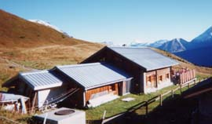

Refuge la Roselette (1871 m)

Département, commune : Haute Savoie, commune de Les Contamines Montjoie
Carte : IGN Top25 3531 OT pli 11C
Situation : sous le col du Joly. Adresse : BP 9, 74170 les Contamines Montjoie. téléphone gîte : 04 50 47 13 31
Propriétaire-Gardien : Jean-Pierre et Catherine Curdel, 04 50 47 53 82
Ouverture et gardiennage : ouvert et gardé du 1/6 au 30/11, fermé hors cette période
Commodités : 18 places (dortoir avec matelas, couvertures, oreiller ; sac à viande obligatoire),
équipements sanitaires, douches,
Restauration, bar, produits alimentaires de base,
eau potable à l’extérieur.
Accès : sentier balisé, à 500 m du Signal (gare supérieure du télécabine)
Itinéraires à proximité : TPMB, tour du Beaufortain
Randonnées à partir du refuge :
guide ou site AsF© : aiguille Croche, col de la Fenêtre
autres randonnées : Mont Joly, aiguille de Roselette